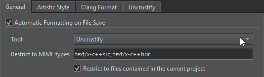
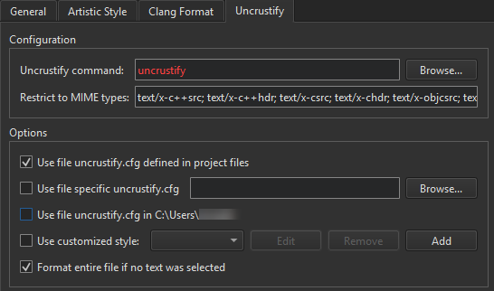
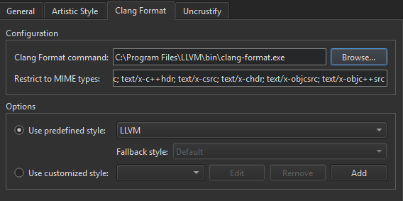
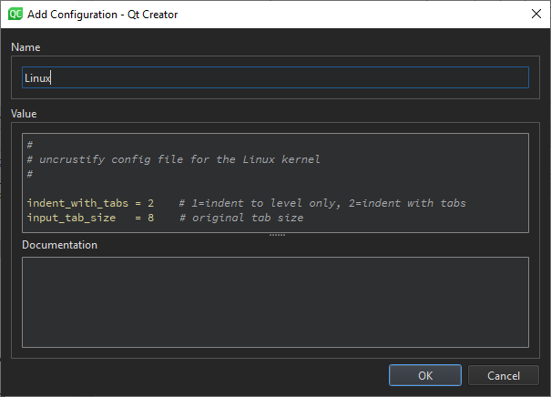

Beautifier
Automatically apply indentation and style to source code files when you save them. Use a predefined style or define your own style.
To specify settings for beautifying files:
- Go to Preferences > Beautifier > General.
- Select Automatic formatting on file save to automatically beautify files when you save them using the tool you select in the Tool field.

- In Restrict to MIME types, define the MIME types of the files to beautify, separated by semicolons. Leave the field empty to apply the tool on all files.
This setting is applied only when automatically beautifying files on save. To restrict the MIME types when selecting the menu item to format the currently open file, specify this option in the tool-specific tab.
- Select Restrict to files contained in the current project to only beautify files that belong to the current project.
- Go to Artistic Style, ClangFormat, or Uncrustify to specify settings for the tool you want to use.

- In Configuration, specify the path to the tool executable in Artistic Style command, ClangFormat command, or Uncrustify command.
- In Restrict to MIME types, define the MIME types of the files to beautify. This setting is applied when you select the menu item to format the currently open file.
- In Options, select the configuration file that defines the style to use in the source files. If you select several options, they are applied from top down. The available options depend on the tool.
Beautifier Tool Options
To set the following options, you must have one of the tools installed.
| Option | Value |
|---|---|
| Use file *.astylerc defined in project files Use file uncrustify.cfg defined in project files | Use the configuration file defined in the project file as the configuration file for the selected tool. |
| Use specific config file Use file specific uncrustify.cfg | The file to use as the configuration file for the selected tool. |
| Use file uncrustify.cfg in <$HOME> Use file .astylerc or acstylerc in <$HOME> | Use the specified file in the user's home directory as the configuration file for the selected tool. |
| Use customized style | Set your own code style. |
| Format entire file if no text was selected | Format the whole file when no text is selected in the editor and you select Format Selected Text. |
Using a Predefined ClangFormat Style
To use a predefined ClangFormat style, go to ClangFormat and select a style in Use predefined style.

Select File to load the style configuration from the .clang-format or _clang-format file located in the same directory as the source file or in one of its parent directories.
In Fallback style, select a fallback style to use if the style configuration file is not available. Select Default to use the default style. Select None to skip formatting.
Defining a Style
To define your own style, select Use customized style, and then select Add.
Set the code style in the Add Configuration dialog. It offers syntax highlighting, auto-completion, and context-sensitive help.

See also Beautify source code and Enable and disable plugins.